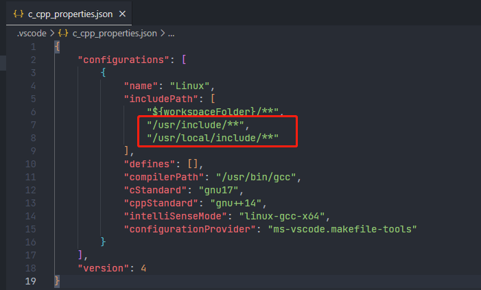

VSCode c++ 环境搭建
安装的插件有
-
CMake
现在习惯用 cmake 来搭建工程了 -
CMake Language Support
我喜欢用 cmake 来管理工程，这个插件能补全 cmake 代码 -
Doxygen Documentation Generator
用来生成注释，在文件开头输入 /**，再按回车健，即会生成文件头注释。 在函数的上方输入 /**，会生成函数注释 -
One Dark Pro
漂亮的主题 -
Material Icon Theme
这图标，爱了爱了 -
c/c++
虽然 cpp-tools 进程会导致 cpu 占用高，但跳转功能真的是没法儿割舍
由于 c/c++ 插件的默认搜索路径少了 /usr/include，会出现错误提示。 所以需要手工添加一下这个配置。  -
Clang-Format
代码格式化，推荐 google 风格 如果用 .clang-format 文件来指定格式，就得把配置中对应的格式化风格去掉，不然会覆盖文件所指定的格式。
安装的字体
- JetBrains Mono 由于该字体会连写一些操作符，所以需要设置
"editor.fontLigatures": true,